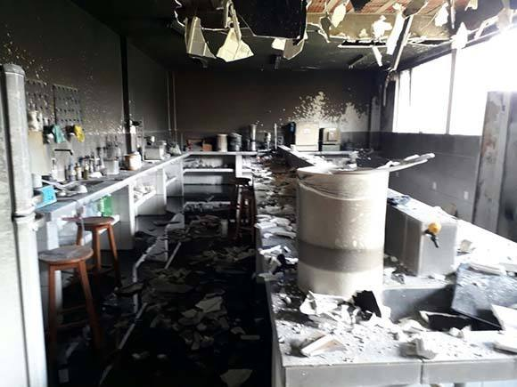

Periculosidade dos agentes químicos
Perigos Químicos
As mesmas propriedades químicas que valorizamos nas substâncias podem torná-las perigosas
- Exemplo: Solventes orgânicos
Dissolvem bem moléculas orgânicas

Ressecam a pele

Perigos Químicos
As mesmas propriedades químicas que valorizamos nas substâncias podem torná-las perigosas
- Exemplo: Nitrogênio líquido

Permite o uso do frio em procedimentos laboratoriais


Risco de queimaduras da pele por congelamento

Perigos Químicos
As mesmas propriedades químicas que valorizamos nas substâncias podem torná-las perigosas
- Exemplo: Gás

Permite o uso de fogo nos procedimentos


Risco de explosão
Paradoxo dos Perigos Químicos
- As propriedades que tornam um produto químico útil são muitas vezes aquelas que o tornam arriscado de usar.
- Devemos aprender a usar com segurança produtos químicos
Embora muitos produtos químicos tenham perigos, a maioria não apresenta risco em nossas vidas diárias com o uso normal, porque aprendemos a reconhecer os perigos e minimizar seus riscos.
Para aprender a manusear produtos químicos corretamente, devemos primeiro ser capazes de identificar e entender os perigos presentes.

O risco de usar produtos não avaliados

- Fração pequena de produtos avaliados
- Baixa exposição para o consumidos comum
- Risco maior para os trabalhadores de laboratórios
- Uso de produtos não avaliados ou parcialmente avaliados
- Medidas para minimizar os riscos ausentes
Toxicologia
- É a ciência que estuda os efeitos nocivos decorrentes das interações de substâncias químicas/agentes físicos com sistemas biológicos
- Como resultado dessa interação teremos a observação do efeito tóxico, dependendo das condições de exposição

Triade da toxicologia
- A tríade que sustenta essa ciência é composta por
- Agente tóxico
- Toxicidade
- Intoxicação
- Estes três princípios são estudados com a finalidade de
- Prevenir a intoxicação
- Se a prevenção falhar
- Diagnosticar
- Tratar
- Se a prevenção falhar
- Prevenir a intoxicação